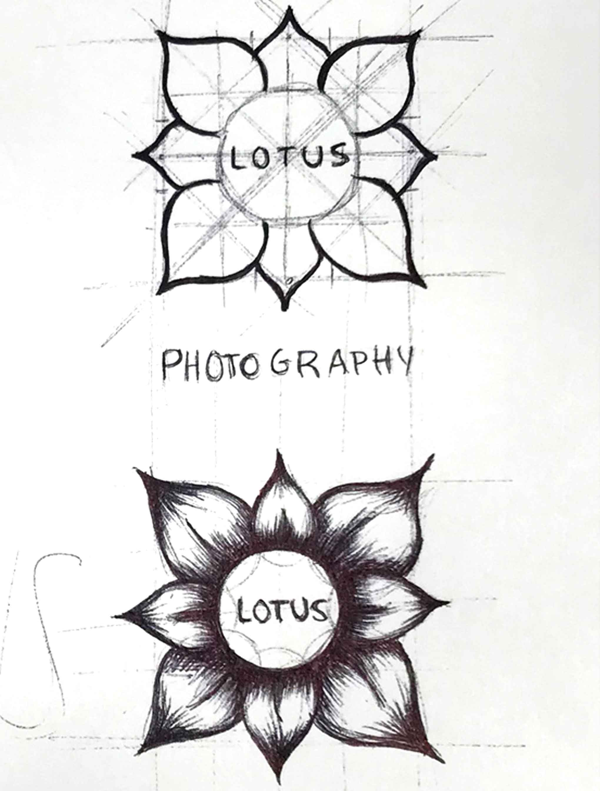

Lotus
Lotus is a new photography company specializing in portraits. This logo will serve as a photo watermark and will be used on flyers and advertisements. To create this logo I explored geometric shapes, literal shapes, value, and only line as possible directions. If the watermark was too complex it would be less effective so we decided to use only three line weights. I took inspiration from the form of an origami lotus flower.

